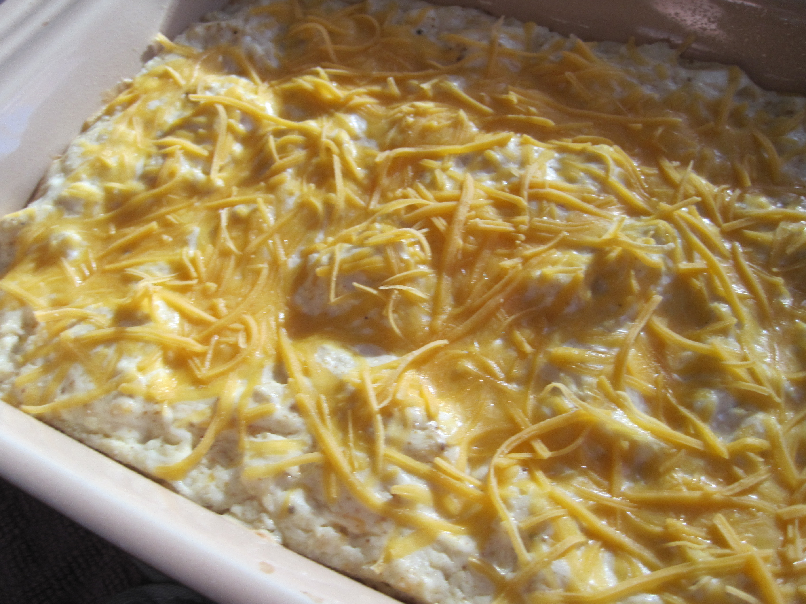
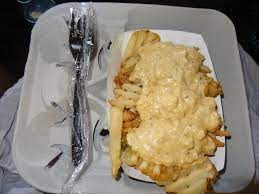
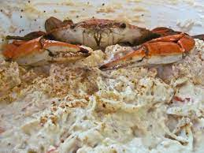

Maryland Crab Dip
Maryland crab dip does not have special/foreign ingredients. Everyone has access to these ingredients at their local supermaket.
Crab dip just doesn't get better than this!

Ingredients
- Old bay or paprika seasoning
- 8 oz of crab meat
- 2 tbsp of mayonnaise
- 1/2 cup of Sour cream
- 8 oz of cream cheese
- 1 pinch of garlic salt
- 1/4 cup of sharp cheddar cheese
- 1 1/4 tsp of worchestershire sauce
- 1 tbsp of lemon juice
- 1/2 tsp of dry mustard
Measurement Abbreviation Descriptions
- Oz = Ounces
- Tbsp = Tablespoon
- Tsp = Teaspoon

Instructions
- In a large bowl, mix cream cheese, sour cream, mayonnaise, lemon juice, worcestershire sauce, dry mustard, and garlic salt. Stir until all the ingredients are smooth in the bowl.
- Stir in 2 tbsp of shredded cheddar cheese.
- Mix crab meat into the bowl of mixtured ingredients.
- Pour mixture into a casserole dish or pan.
- Layer the crab dip dish with shredded cheese on top.
- Sprinkle the old bay or paprika seasoning on top of the crab dip.
- Bake at 325 degrees Fahrenheit for approximately 30 minutes or until the top is browned.

The "Maryland Crab Dip" is my favorite recipe because it's simple and easy to make. There are many things that compliment crab dip to eat it with ranging from french fries just like how they serve it at Camden Yards which is my favorite combination. There are also options such as Ritz Crackers, toasted wedges, celery, and bread that taste delicious with it. If i had an option I would eat this everyday, I already eat it everytime I get the chance to.
Listed below will be a few links that offer free recipes online.